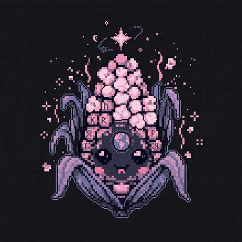

SINCE YOU OPENED THIS PAGE · RICHEST 10%
0 t
tonnes CO₂-equivalent
The richest tenth of humanity produces about half of the world’s greenhouse gases. The poorest half produces about a tenth, and lives where heat, drought and floods hit hardest. Below that: the ledger of what the industry knew, the doubt it paid for, and who lobbies. Every figure links to the page it came from.

How the world’s emissions divide by income. Most of these studies count what people consume and, for the richest, what they own: a share of a company’s emissions follows its shares.
Attribution studies trace measured warming and specific extremes back to the emissions of each group.
The damage lands where the emissions are lowest: on poorer countries and poorer people, who have the least to adapt with.
What the richest people and their companies are building now, and the emissions it carries: data centres for artificial intelligence, private jets, superyachts, rockets, crypto mining, and the investment portfolios that the inequality studies count as theirs.
A projection, not a measurement. It runs the published scenarios for each venture forward, converts the energy to carbon with the published intensities, and the carbon to harm with the published damage estimates. Every input is listed with its source below the chart, and the range shows how far the published cases disagree.
| INPUT | VALUE | SOURCE |
|---|
How the class that emits the most kept it that way. What the oil industry’s own scientists told it, and when; the doubt it paid for afterwards; the bribery and fraud cases that reached court; public climate science and data moved into private hands; and who lobbies today.
“Victory will be achieved when average citizens ‘understand’ (recognize) uncertainties in climate science.”— American Petroleum Institute, Global Climate Science Communications Plan (draft, April 1998)
Four chapters on one timeline. Pick a chapter or search; each entry opens to the full account, who was involved, and the source. Outright insider-trading convictions tied to climate are rare: most proven abuses are bribery, misleading investors and carbon-credit fraud, and they are labelled that way.
Weather and climate data were built with public money and given away free. These entries track attempts to commercialize public forecasting, cut or delete federal climate research, steer university research with corporate endowments, and turn public subsidies, patents and the sky itself into private assets.
The money and organizations working to delay, weaken or block climate policy, with documented examples for each.
Global CO₂ from fossil fuels and cement at benchmark years, and the CO₂ it built up in the air. More than half of all fossil CO₂ ever emitted has been released since 1990, after the industry’s own scientists had briefed management.
Part I: every figure names its source and links to the specific document, never to Wikipedia or a copy of it. Each one was checked by re-opening the cited page and finding the figure and the passage it came from (the QUOTE button shows that passage). Estimates are attributed to whoever made them. The forecast in section 05 is a projection built from published scenarios; it is labelled as one, and its inputs are listed in full.
Part II, the ledger: compiled from court records, government documents, the companies’ own internal reports as published by journalists and researchers, peer-reviewed studies, and investigative reporting; each entry names its source and was fact-checked against it in October 2026. Accusations not proven in court are labelled as such, and where a case was lost or dropped, that is stated too. Several cases are still moving, including Suncor v. Boulder at the US Supreme Court and the D.C. Circuit challenge to the endangerment-finding repeal.